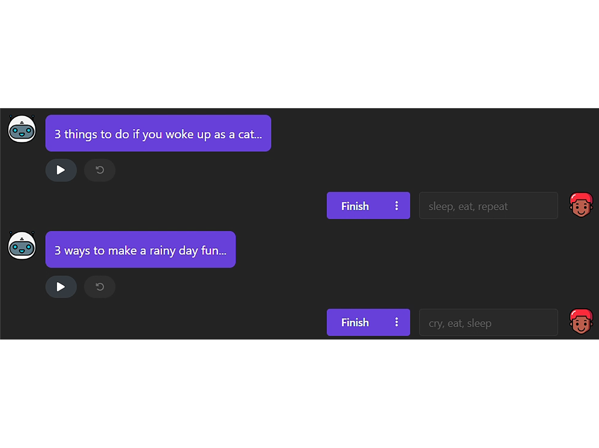

Key Features of ImprovMate

Improvisation training for actors presents unique challenges, particularly in maintaining narrative coherence and managing cognitive load during performances. Previous research on AI in improvisation performance often predates advances in large language models (LLMs) and relies on human intervention. We introduce ImprovMate, which leverages LLMs as GPTs to automate the generation of narrative stimuli and cues, allowing actors to focus on creativity without keeping track of plot or character continuity. Based on insights from professional improvisers, ImprovMate incorporates exercises that mimic live training, such as abrupt story resolution and reactive thinking exercises, while maintaining coherence via reference tables. By balancing randomness and structured guidance, ImprovMate provides a groundbreaking tool for improv training. Our pilot study revealed that actors might embrace AI techniques if the latter mirrors traditional practices, and appreciate the fresh twist introduced by our approach with the AI-generated cues.
ImprovMate enables actors to rehearse improvisation scenes without the need for a human partner. Using LLMs, the system generates story prompts, characters, and narrative twists based on the actor's performance. It supports speech and motion input via webcam and microphone, requiring no additional equipment. This makes solo practice sessions both accessible and stimulating, closely mimicking live group training.
To maintain flow and coherence during performances, ImprovMate tracks key elements such as characters, locations, and objects. The system also provides dynamic hints, as unexpected objects or character shifts, to inspire new directions in the story. These AI-generated suggestions act like live audience prompts, helping performers remain spontaneous while preserving consistency. The result is a balance between creative freedom and structured storytelling.

ImprovMate includes built-in exercises designed to improve responsiveness and narrative control. For example, Three Things trains fast thinking with quirky prompts, while Endings challenges users to wrap up complex stories in a single take. These exercises are based on real actor feedback and replicate activities used in improv groups. They are especially useful for low-energy sessions, giving performers the chance to refine their skills with minimal cognitive load.
@inproceedings{drago2025improvmate,
author = {Riccardo Drago and Yotam Sechayk and Mustafa Doga Dogan and Andrea Sanna and Takeo Igarashi},
title = {{ImprovMate: Multimodal AI Assistant for Improv Actor Training}},
booktitle = {Companion Publication of the 2025 ACM Designing Interactive Systems Conference (DIS ’25 Companion)},
year = {2025},
publisher = {Association for Computing Machinery},
address = {New York, NY, USA},
doi = {10.1145/3715668.3736363},
isbn = {979-8-4007-1486-3},
url = {https://doi.org/10.1145/3715668.3736363}
}